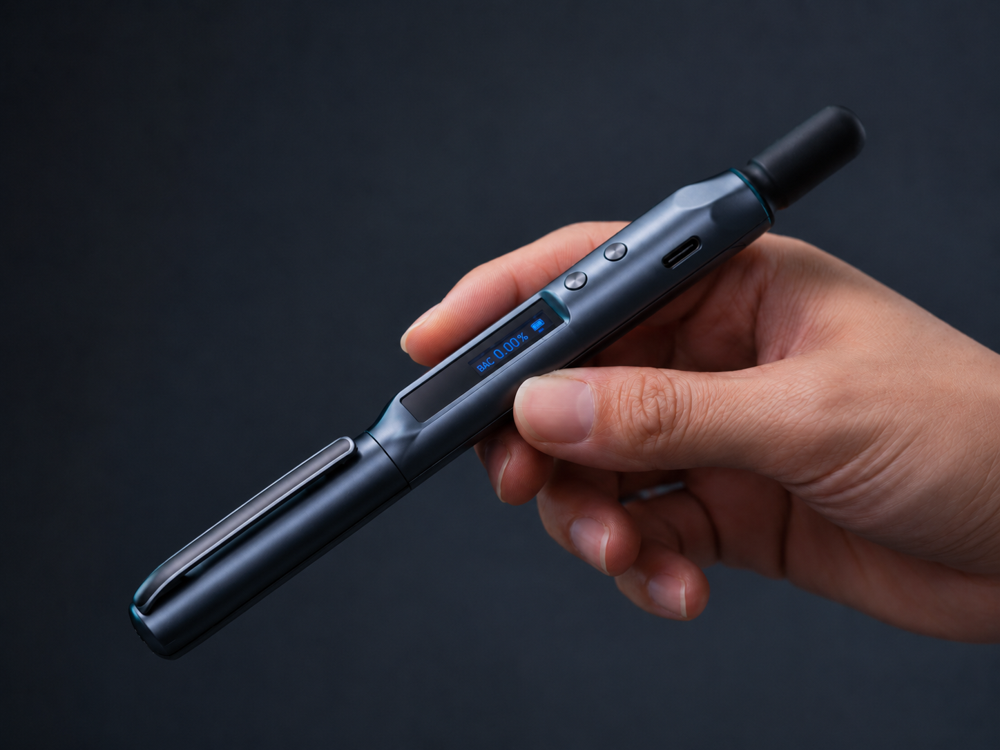

Know Before You Go™
The breathalyzer replaces guessing with certainty.
Use it before leaving a concert, walking out of a bar, exiting a festival, or deciding whether to drive.
BacRub helps you pause long enough to think clearly before stress, uncertainty, or emotion becomes the loudest voice in the room.
The launch visual now leads with motion, while this product shot gives buyers the clear hardware proof: screen, clip, buttons, USB-C, and massage end.

They happen in moments of stress, uncertainty, and emotion moving faster than judgment. BacRub was built around a simple belief: the right decision starts with a moment of clarity.
Clarity.
Use it before leaving a concert, walking out of a bar, exiting a festival, or deciding whether to drive.
Use it to release tension, calm the moment, and reconnect mind and body before reacting.
Use it to write it down, reflect, and turn a reaction into a more intentional next step.
Together, those tools create something bigger than a gadget: a ritual. A reminder that the best decisions are rarely rushed. Because confidence isn't guessing. Confidence is knowing.
Breathalyzer verification for safe driving, nightlife, festivals, and responsible decisions.
Somatic acupressure support for anxiety, stress management, and emotional regulation.
Pen-based reflection for journaling, productivity, focus, and personal growth.
Write down what matters, release tension through somatic acupressure, and replace BAC guessing with certainty.
BacRub is designed to live where decisions happen: clipped like a pen, used to release tension, and checked before leaving.
Pen-style form factor that feels subtle, personal, and premium instead of bulky or clinical.
A small OLED screen and intuitive controls make the device approachable even in low-light situations.
Helps calm the moment, reconnect mind and body, and restore focus before the next decision.
Turns a stressful moment into a small sequence: reflect, relax, verify, and decide.
BacRub gives you a physical pause: reflect, release tension, verify what is true, and choose with more clarity than the moment started with.
Know Before You Go™. Know Before You React™. Know Before You Act™.
Use the breathalyzer when uncertainty matters and guessing is not good enough.
Use the somatic acupressure massager to release tension before stress turns into a snap decision.
Use the pen to capture the thought, make it visible, and decide from a clearer place.
BacRub is not about catching someone doing something wrong. It is about helping someone create clarity before action.
Know Before You Go™ when the ride decision matters.
Know Before You React™ when emotion is louder than judgment.
Know Before You Act™ when writing it down can change the next step.
A pen-shaped tool stays close because it is useful even before the hard moment arrives.
Join the early list for BacRub updates, launch timing, and first-access availability.
We will only use your email for BacRub launch updates.
No. The breathalyzer is one part of the ritual. BacRub also includes a somatic acupressure massager and pen utility for reflection.
Before leaving, before reacting, or before acting. It is meant for the pause before the next decision.
No. BacRub is designed to create awareness and clarity, not to make legal, medical, or driving decisions for you.